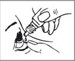

RÉSUMÉ DES CARACTÉRISTIQUES DU PRODUIT
ANSM - Mis à jour le : 03/07/2012
DORZOLAMIDE TIMOLOL CHAUVIN 20 mg/5 mg/ml, collyre en solution
2. COMPOSITION QUALITATIVE ET QUANTITATIVE
Chaque ml contient 22,26 mg de chlorhydrate de dorzolamide, correspondant à 20 mg de dorzolamide et 6,83 mg de maléate de timolol, correspondant à 5 mg de timolol.
Excipients : chlorure de benzalkonium 0,075 mg/ml.
Pour la liste complète des excipients, voir rubrique 6.1.
Solution stérile incolore à légèrement jaunâtre.
4.1. Indications thérapeutiques
4.2. Posologie et mode d'administration
La dose est d'une goutte de DORZOLAMIDE TIMOLOL CHAUVIN dans le cul de sac conjonctival de(s) l'œil (des yeux) atteint(s), deux fois par jour.
Mode d’administration
En cas d'utilisation concomitante avec un autre collyre, le collyre en solution Dorzolamide / Timolol et l'autre collyre doivent être administrés à 10 minutes d'intervalle au moins.
Si vous utilisez un autre produit à usage ophtalmique, vous devez espacer les utilisations de ce produit et du collyre en solution Dorzolamide / Timolol d’au moins 10 minutes.
Les patients doivent être avertis de se laver les mains avant utilisation de ce collyre et d'éviter de mettre en contact l'embout du flacon avec l'œil ou les parties avoisinantes.
Les patients doivent aussi être informés que les solutions ophtalmiques, incorrectement manipulées, peuvent être contaminées par des bactéries communes, connues pour entraîner des infections oculaires. L'usage de solutions contaminées peut provoquer des lésions graves de l'œil et par la suite une perte de la vision.
Les patients doivent être informés de la manipulation correcte des flacons
Mode d'emploi
1. Lavez-vous les mains puis asseyez-vous ou installez-vous confortablement.
2. Dévissez le bouchon.
3. Inclinez la tête vers l’arrière.
4. Abaissez délicatement la paupière inférieure de l’œil atteint.
5. Tenez le flacon au-dessus de l’œil et approchez l’embout de l’œil en évitant tout contact.
ÉVITEZ TOUT CONTACT ENTRE L’EMBOUT DU RÉCIPIENT ET VOTRE ŒIL OU VOTRE PAUPIÈRE.
6. Pressez légèrement le récipient de sorte qu’une seule goutte tombe dans l’œil, puis relâchez la paupière inférieure.
7. Fermez l’œil et appuyez votre doigt dans le canthus interne de l’œil atteint. Restez ainsi 1 minute.
8. Répétez l’opération pour l’autre œil si le médecin vous l'a indiqué.
9. Revissez le bouchon sur le récipient.

Population pédiatrique
L’efficacité du collyre en solution Dorzolamide / Timolol n’a pas été établie chez les enfants de la naissance jusqu’à 18 ans. Les données actuelles disponibles pour des enfants âgés de 2 à 6 ans sont décrites en section 5.1 mais il n’est pas possible de recommander une posologie.
· hypersensibilité à l’une des substances actives ou les deux, ou à l’un des excipients.
· maladie réactionnelle des voies respiratoires, notamment asthme ou antécédents d’asthme, ou broncho-pneumopathie chronique obstructive (BPCO) grave.
· bradycardie sinusale, bloc auriculo-ventriculaire du 2ème ou 3ème degré, insuffisance cardiaque symptomatique, choc cardiogénique.
· insuffisance rénale grave (clairance de la créatinine < 30 ml/min) ou acidose tubulaire rénale.
Les contre-indications ci-dessus se rapportent aux substances actives individuellement et ne se limitent pas à leur association.
4.4. Mises en garde spéciales et précautions d'emploi
Réactions cardiovasculaires/Réactions respiratoires
Comme les autres produits à usage ophtalmique administrés localement, ce médicament peut être absorbé par tout l’organisme. Le maléate de timolol est un bêtabloquant. Ainsi, une administration locale peut entraîner les mêmes effets indésirables qu’un traitement général par bêtabloquants, notamment l’aggravation d’un angor de Prinzmetal, l’aggravation de troubles circulatoires périphériques/centraux graves et l’hypotension.
En raison de la présence de maléate de timolol, une insuffisance cardiaque doit être correctement contrôlée avant de commencer le traitement par par le collyre en solution Dorzolamide / Timolol. Chez les patients présentant des antécédents de maladie cardiaque grave, on doit surveiller la survenue de signes d'insuffisance cardiaque et vérifier la fréquence cardiaque.
Des réactions respiratoires et cardiaques consécutives à une administration de maléate de timolol ont été rapportées, dont certains cas mortels chez des patients souffrant d'asthme dus à un bronchospasme, et de rares cas mortels chez des patients insuffisants cardiaques.
Trouble de la fonction hépatique
Le collyre en solution Dorzolamide / Timolol n'a pas été étudié chez les patients présentant une insuffisance hépatique et doit donc être utilisé avec précaution chez chez ces patients.
Immunologie et hypersensibilité
Comme les autres produits à usage ophtalmique administrés localement, ce médicament peut passer dans la circulation générale.
Le dorzolamide contient un groupe de sulfamido commun aux sulfamides.
Par conséquent, une administration locale peut entraîner les mêmes effets indésirables qu’un traitement général par sulfamides. Dès l’apparition de signes de réactions graves ou d’hypersensibilité, vous devez cesser le traitement.
Des réactions oculaires locales indésirables, semblables à celles observées avec les collyres à base de chlorhydrate de dorzolamide, ont été observées lors d’un traitement par Dorzolamide / Timolol.
Si de telles réactions surviennent, l'arrêt du collyre en solution Dorzolamide / Timolol doit être envisagé.
Les patients prenant des bêta-bloquants et ayant des antécédents d'atopie ou des antécédents de réactions anaphylactiques sévères à divers allergènes peuvent avoir des réactions plus intenses que la normale à une exposition répétée accidentelle, diagnostique ou thérapeutique à de tels allergènes. Ces patients peuvent ne pas répondre aux doses d’adrénaline habituellement utilisées pour traiter de telles réactions anaphylactiques.
Traitement associé
Un traitement associé avec les médicaments suivants n’est pas recommandé :
· dorzolamide et inhibiteurs de l’anhydrase carbonique par voie orale
· bêta-bloquants locaux
Arrêt du traitement
Comme pour les bêtabloquants généraux, si l’arrêt du collyre à base de maléate de timolol se révèle nécessaire chez des patients souffrant de maladie coronarienne, il convient de diminuer progressivement le traitement jusqu’à l’arrêt.
Effets supplémentaires des bêtabloquants
Le traitement par bêtabloquants peut masquer certains symptômes d’hypoglycémie chez des patients souffrant de diabète sucré ou d’hypoglycémie.
Ce traitement peut en outre masquer certains symptômes d’hyperthyroïdie. Un arrêt brutal du traitement par bêtabloquants peut favoriser l’exacerbation de symptômes.
Le traitement par bêtabloquants peut aggraver les symptômes de myasthénie gravis.
Effets supplémentaires de l’inhibition de l’anhydrase carbonique
Le traitement par inhibiteurs de l’anhydrase carbonique par voie orale a été associé à la lithiase urinaire comme une conséquence de déséquilibres acido-basiques, notamment chez des patients présentant des antécédents de calculs rénaux. Bien qu’aucun cas de déséquilibre acido-basique n’ait été observé avec le collyre en solution Dorzolamide / Timolol, de rares cas de lithiase urinaire ont été rapportés. Étant donné que le collyre en solution Dorzolamide / Timolol contient un inhibiteur de l’anhydrase carbonique local qui passe dans la circulation générale, il peut exister un risque accru de lithiase urinaire lié à l'administration du collyre en solution Dorzolamide / Timolol chez des patients présentant des antécédents de calculs rénaux.
Autres
La prise en charge des patients ayant un glaucome aigu par fermeture de l'angle nécessite en plus des agents hypotenseurs d'autres mesures thérapeutiques. Le collyre en solution Dorzolamide / Timolol n’a pas été testé sur des patients souffrant de glaucome aigu à angle fermé.
Sous dorzolamide, des cas d’œdèmes cornéens et de décompensations cornéennes irréversibles ont été rapportés chez des patients présentant des antécédents de maladie chronique de la cornée et/ou de chirurgie intraoculaire. Le dorzolamide en application locale doit être utilisé avec précaution chez ces patients.
Après une chirurgie de filtration, un décollement choroïdien associé à une hypotension oculaire a été observé après l’administration de médicaments qui suppriment la sécrétion d’humeur aqueuse.
Comme pour l’utilisation d’autres antiglaucomateux, une réponse limitée au collyre à base de maléate de timolol a été rapportée chez certains patients après un traitement de longue durée. Toutefois, des études cliniques concernant 164 patients suivis sur au moins 3 ans n’ont révélé aucun changement significatif de la pression intraoculaire moyenne après la stabilisation initiale.
Port de lentilles de contact
Le collyre en solution Dorzolamide / Timolol contient du chlorure de benzalkonium, un conservateur pouvant entraîner une irritation oculaire. Les lentilles de contact doivent être retirées avant l'instillation du collyre et ne peuvent être remises en place que 15 minutes après. Le chlorure de benzalkonium entraîne une coloration des lentilles souples.
Effets d’une utilisation détournée à des fins de dopage
L’utilisation du collyre en solution Dorzolamide / Timolol peut entraîner un résultat positif aux tests antidopage.
Usage pédiatrique
Voir la section 5.1.
4.5. Interactions avec d'autres médicaments et autres formes d'interactions
Aucune étude d’interaction spécifique n’a été réalisée sur le collyre en solution Dorzolamide / Timolol.
Dans le cadre d’études cliniques, le collyre en solution Dorzolamide / Timolol a été administré en même temps que les médicaments généraux suivants, sans révéler d’interaction : les inhibiteurs de l’enzyme de conversion de l’angiotensine (ECA), les inhibiteurs calciques, les diurétiques, les anti-inflammatoires non stéroïdiens (AINS) notamment l’acide acétylsalicylique, et les hormones (par exemple œstrogène, insuline, thyroxine).
Cependant, il existe un risque d’effets additifs et de survenue d’hypotension et/ou de bradycardie marquée lorsqu'un collyre à base de maléate de timolol est administré en même temps que des inhibiteurs calciques, des médicaments qui inhibent les récepteurs des catécholamines ou des bêtabloquants, des antiarythmiques (y compris l’amiodarone), des glucosides digitaliques, des parasympathomimétiques, des narcotiques et des inhibiteurs de la monoamine oxydase (IMAO) par voie orale.
Une potentialisation des effets systémiques bêta-bloquants (par exemple diminution de la fréquence cardiaque, cas de dépression) a été rapportée lors de traitements associant les inhibiteurs du CYP2D6 (par ex. quinidine, inhibiteurs sélectifs de la recapture de la sérotonine [ISRS]) et le timolol.
Le dorzolamide présent dans le collyre en solution Dorzolamide / Timolol est un inhibiteur de l’anhydrase carbonique qui passe dans la circulation générale même lorsqu’il est administré localement. Dans le cadre d’études cliniques, aucun déséquilibre acido-basique n’a été rapporté pendant le traitement par collyre à base de chlorhydrate de dorzolamide. Un tel déséquilibre a toutefois été observé avec l’administration d’inhibiteurs de l’anhydrase carbonique par voie orale, occasionnant des interactions dans certains cas (par exemple des effets toxiques pendant un traitement par salicylate à fortes doses). Par conséquent, l’éventualité de ces interactions doit être prise en compte pour les patients traités au collyre en solution Dorzolamide / Timolol.
Même si le collyre en solution Dorzolamide / Timolol utilisé seul a peu d’impact sur la taille de la pupille, des cas peu fréquents de mydriase ont été rapportés avec l’utilisation simultanée d’adrénaline et de collyres à base de maléate de timolol.
Les bêtabloquants peuvent renforcer l’effet hypoglycémique des médicaments antidiabétiques.
À l’arrêt de la clonidine, les bêtabloquants par voie orale peuvent aggraver une hypertension susceptible d’apparaître par effet rebond.
Vous ne devez pas utiliser le collyre en solution Dorzolamide / Timolol pendant la grossesse.
Dorzolamide :
Il n’existe pas de données cliniques fiables concernant les femmes enceintes. Chez le lapin, le dorzolamide a entraîné des effets tératogènes à des doses maternotoxiques (voir la section 5.3).
Timolol :
Des études épidémiologiques contrôlées n’ont démontré aucun effet tératogène lié à l’utilisation générale des bêta-bloquants, mais quelques effets pharmacologiques tels que la bradycardie ont été observés chez les fœtus ou les nouveau-nés. Si le collyre en solution Dorzolamide / Timolol est utilisé jusqu’à l’accouchement, le nouveau-né doit être attentivement surveillé dans les tout premiers jours de sa vie.
Dorzolamide :
Il n’existe aucune preuve que le dorzolamide soit excrété dans le lait maternel. Chez des rates en période de lactation recevant du dorzolamide, on a observé une diminution du poids chez les descendants.
Timolol :
Le timolol est excrété dans le lait maternel humain.
Si l’utilisation du collyre en solution Dorzolamide / Timolol se révèle nécessaire, l’allaitement n’est pas recommandé.
4.7. Effets sur l'aptitude à conduire des véhicules et à utiliser des machines
Dans le cadre d’études cliniques, 1 035 patients ont été traités au collyre en solution Dorzolamide / Timolol. Environ 2,4 % des patients ont arrêté le traitement en raison d’effets indésirables locaux oculaires, et environ 1,2 % des patients l’ont arrêté en raison d’effets indésirables locaux évocateurs d’ allergie ou d’ hypersensibilité (inflammation des paupières et conjonctivite).
Les effets indésirables suivants ont été rapportés avec le collyre en solution Dorzolamide / Timolol ou l’un de ses composants, au cours d’essais cliniques ou après la mise sur le marché :
Les événements sont classés par fréquence comme suit :
Très fréquents (>=1/10)
Fréquents (>=1/100 à <1/10)
Peu fréquents (>=1/1 000 à <1/100)
Rares (>=1/10 000 à <1/1 000)
Très rares (<1/10 000)
Fréquence indéterminée (ne peut être estimée sur la base des données disponibles)
Affections musculo-squelettiques et des tissus conjonctifs :
Collyres à base de maléate de timolol :
Rares : lupus érythémateux disséminé
Affections du système nerveux :
Collyres à base de chlorhydrate de dorzolamide :
Fréquentes : céphalées
Rares : vertiges, paresthésie
Collyres à base de maléate de timolol :
Fréquentes : céphalées
Peu fréquentes : vertiges, dépression
Rares : insomnie, cauchemars, pertes de mémoire, paresthésie, aggravation des signes et symptômes de myasthénie gravis, diminution de la libido, accident vasculaire cérébral (AVC)
Affections oculaires :
Dorzolamide / Timolol, collyre en solution
Très fréquentes : brûlures et picotements
Fréquentes : hyperhémie conjonctivale, vision trouble, érosion cornéenne, démangeaisons oculaires, larmoiement
Collyres à base de chlorhydrate de dorzolamide :
Fréquentes : inflammation des paupières, irritation des paupières
Peu fréquentes : iridocyclite
Rares : irritation incluant rougeurs, douleurs, lésions crouteuses palpébrale, myopie transitoire (qui disparaît à l'arrêt du traitement), œdème cornéen, hypotension oculaire et décollement choroïdien (consécutif à une chirurgie de filtration)
Collyres à base de maléate de timolol :
Fréquentes : signes et symptômes d’irritation oculaire, notamment blépharite, kératite, diminution de sensibilité cornéenne et sécheresse oculaire
Peu fréquentes : troubles de la vision notamment modifications de la réfraction (dans certains cas, due à l’arrêt d’un traitement par myotiques)
Rares : ptosis, diplopie, décollement choroïdien (consécutif à une chirurgie de filtration)
Affections auriculaires et labyrinthiques :
Collyres à base de maléate de timolol :
Rares : acouphènes
Affections cardiaques et vasculaires :
Collyres à base de maléate de timolol :
Peu fréquentes : bradycardie, syncope
Rares : hypotension, douleur thoracique, palpitations, œdème, arythmie, insuffisance cardiaque congestive, bloc auriculo-ventriculaire, arrêt cardiaque, ischémie cérébrale, claudication, phénomène de Raynaud, froideur des extrémités.
Affections respiratoires, thoraciques et médiastinales :
Dorzolamide / Timolol, collyre en solution
Fréquentes : sinusite
Rares : essoufflement, insuffisance respiratoire, rhinite
Collyres à base de chlorhydrate de dorzolamide :
Rares : épistaxis
Collyres à base de maléate de timolol :
Peu fréquentes : dyspnée
Rares : bronchospasme (principalement chez des patients présentant des antécédents de maladie bronchospastique), toux
Affections gastro-intestinales :
Dorzolamide / Timolol, collyre en solution
Très fréquentes : altération du goût
Collyres à base de chlorhydrate de dorzolamide
Fréquentes : nausées
Rares : irritation de la gorge, sécheresse buccale
Collyres à base de maléate de timolol :
Peu fréquentes : nausées, dyspepsie
Rares : diarrhée, sécheresse buccale
Affections de la peau et du tissu sous-cutané :
Dorzolamide / Timolol, collyre en solution
Rares : dermite de contact
Collyres à base de chlorhydrate de dorzolamide
Rares : exanthème
Collyres à base de maléate de timolol :
Rares : alopécie, exanthème psoriasiforme ou aggravation de psoriasis
Affections rénales et urinaires :
Dorzolamide / Timolol, collyre en solution
Peu fréquentes : lithiase urinaire
Affections génitales et mammaires :
Collyres à base de maléate de timolol :
Rares : maladie de La Peyronie
Affections générales et au site d'administration :
Dorzolamide / Timolol, collyre en solution
Rares : signes et symptômes de réactions allergiques générales, notamment œdème de Quincke, urticaire, prurit, exanthème, choc anaphylactique, bronchospasme
Collyres à base de chlorhydrate de dorzolamide :
Fréquentes : asthénie/fatigue
Collyres à base de maléate de timolol :
Peu fréquentes : asthénie/fatigue
Symptômes
Des cas de surdosage involontaire ont été rapportés avec des collyres à base de maléate de timolol, entraînant les mêmes effets généraux que les bêta-bloquants généraux, à savoir vertiges, maux de tête, essoufflement, bradycardie, bronchospasme et arrêt cardiaque. Les symptômes objectifs et subjectifs les plus courants après un surdosage de chlorhydrate de dorzolamide sont des déséquilibres électrolytiques, l’apparition d’une acidose et la possibilité d’effets sur le SNC.
Il n'existe qu'un nombre limité de données disponibles chez l'homme concernant un surdosage par ingestion accidentelle ou volontaire de chlorhydrate de dorzolamide. Les effets suivants ont été rapportés à la suite d'une ingestion orale: somnolence; en application locale: nausées, étourdissements, céphalées, fatigue, rêves anormaux et dysphagie.
Traitement
Le traitement se doit d’être symptomatique et adapté. Les taux d’électrolytes sériques (notamment le potassium) et de pH du sang doivent être surveillés. Des études ont montré que le timolol n’était pas facilement dialysable.
5. PROPRIETES PHARMACOLOGIQUES
5.1. Propriétés pharmacodynamiques
Mécanisme d’action
Le collyre en solution Dorzolamide / Timolol contient deux composants : le chlorhydrate de dorzolamide et le maléate de timolol. Chacun de ces composants abaisse la pression intraoculaire élevée en diminuant la sécrétion d’humeur aqueuse, mais selon un mécanisme d’action différent.
Le chlorhydrate de dorzolamide est un puissant inhibiteur de l’anhydrase carbonique II. L’inhibition de l’anhydrase carbonique dans les procès ciliaires de l’œil diminue la sécrétion d’humeur aqueuse, vraisemblablement en limitant la formation des ions bicarbonates, avec une diminution secondaire du transport du sodium et des liquides.
Le maléate de timolol est un bêtabloquant non sélectif. Le mécanisme d’action précis selon lequel le maléate de timolol abaisse la pression intraoculaire n’est pas encore clairement établi, mais des tests à la fluorescéine et des examens tonographiques ont indiqué que la principale action pouvait être liée à la réduction de la sécrétion d’humeur aqueuse. Toutefois, certaines études ont également montré une légère augmentation de la facilité d'écoulement. L’effet combiné de ces deux substances permet une diminution supplémentaire de la pression intraoculaire (PIO) par rapport à l’effet de ces substances administrées séparément.
Après une administration locale, le collyre en solution Dorzolamide / Timolol réduit la pression intraoculaire, qu’elle soit ou non associée à un glaucome. La pression intraoculaire élevée est un facteur de risque majeur dans la pathogénie des lésions du nerf optique et de la restriction du champ visuel induite par le glaucome. Le collyre en solution Dorzolamide / Timolol réduit la pression intraoculaire sans les effets secondaires fréquents des myotiques comme l’héméralopie, le spasme d’accommodation et le rétrécissement de la pupille.
Effets pharmacodynamiques
Effets cliniques :
Des études cliniques sur 15 mois ont été réalisées afin de comparer l'effet réducteur de PIO du collyre en solution Dorzolamide / Timolol deux fois par jour (matin et soir) par rapport au timolol à 0,5 % et au dorzolamide à 2 % administrés séparément et simultanément à des patients souffrant de glaucome ou d’hypertension oculaire chez qui le traitement associé était considéré comme approprié dans les essais. Ces études incluaient à la fois des patients non traités et des patients pour qui la monothérapie au timolol semblait insuffisante. La majorité des patients étaient traités par bêtabloquants locaux en monothérapie avant d’être inclus à l’étude. Une analyse des études combinées a démontré que l’effet réducteur de PIO du collyre en solution Dorzolamide / Timolol deux fois par jour était supérieur à celui de la monothérapie par dorzolamide à 2 % trois fois par jour ou par timolol à 0,5 % deux fois par jour. L’effet réducteur de PIO du collyre en solution Dorzolamide / Timolol deux fois par jour était semblable à celui du traitement combiné par dorzolamide deux fois par jour et timolol deux fois par jour. L’effet réducteur de PIO du collyre en solution Dorzolamide / Timolol deux fois par jour a été démontré par plusieurs mesures quotidiennes et cet effet persistait pendant l’administration au long cours.
Usage pédiatrique
Une étude contrôlée sur 3 mois a été réalisée avec pour objectif principal de documenter la sécurité d'emploi des solutions ophtalmiques à base de chlorhydrate de dorzolamide à 2% chez les enfants de moins de 6 ans. Dans le cadre de cette étude, 30 patients âgés de 2 à 6 ans, pour qui la monothérapie par dorzolamide ou timolol ne suffisait pas à contrôler la PIO, ont utilisé le collyre en solution Dorzolamide / Timolol lors d’une phase ouverte. L’efficacité chez ces patients n'a pas été établie. Au sein de ce petit groupe de patients, l’administration deux fois par jour du collyre en solution Dorzolamide / Timolol a été généralement bien tolérée, 19 patients ont suivi le traitement jusqu’au bout et 11 l’ont arrêté pour intervention chirurgicale, modification du traitement médicamenteux ou autres.
5.2. Propriétés pharmacocinétiques
Contrairement aux inhibiteurs de l'anhydrase carbonique par voie orale, l'administration locale de chlorhydrate de dorzolamide permet une action directe du principe actif sur l'œil à des doses substantiellement plus basses et donc une exposition systémique plus faible. Dans les essais cliniques, la conséquence a été une réduction de la PIO sans perturbation de l'équilibre acidobasique ni les troubles hydroélectrolytiques caractéristiques des inhibiteurs de l'anhydrase carbonique administrés par voie orale.
Après une application locale, le dorzolamide passe dans la circulation générale. Afin d’évaluer le potentiel d’inhibition de l’anhydrase carbonique générale consécutive à une application locale, les concentrations de médicament et de métabolite dans les érythrocytes et le plasma ainsi que l’inhibition de l’anhydrase carbonique dans les érythrocytes ont été mesurées. En traitement d’entretien, le dorzolamide s’accumule dans les érythrocytes suite à une liaison sélective à l'anhydrase carbonique II (AC-II) tandis que de très faibles concentrations du principe actif sous forme libre persistent dans le plasma.
La molécule mère est transformée en métabolite N-déséthyl qui inhibe l'AC-II de façon moins puissante mais inhibe aussi une isoenzyme moins active (l'AC-I). Le métabolite s’accumule également dans les érythrocytes où il se lie principalement à l’AC-I. Le dorzolamide se fixe modérément aux protéines plasmatiques (environ 33 %) ; il est principalement éliminé tel quel dans l’urine, de même que le métabolite. Au terme de l’administration, le dorzolamide est éliminé des érythrocytes de façon non linéaire, ce qui entraîne une chute rapide de la concentration suivie d’une phase d’élimination plus lente avec une demi-vie d’environ quatre mois.
Lorsque le dorzolamide a été administré par voie orale pour simuler une exposition systémique maximale consécutive à une administration oculaire au long cours, l'état d'équilibre a été atteint en 13 semaines.
A l'état d'équilibre, il n'y avait virtuellement pas de principe actif sous forme libre ni de métabolite dans le plasma; l'inhibition de l'AC dans les érythrocytes a été inférieure à celle nécessaire à l'obtention d'un effet pharmacologique sur la fonction rénale ou la respiration. Des résultats pharmacocinétiques semblables ont été observés après un traitement d’entretien local à base de chlorhydrate de dorzolamide. Néanmoins, certains patients âgés souffrant d’insuffisance rénale (clairance de la créatinine estimée à 30-60 ml/minute) présentaient des concentrations en métabolite supérieures dans les érythrocytes, mais aucune différence significative sur l'inhibition de l'anhydrase carbonique et aucun effet secondaire systémique cliniquement significatif n’a été imputé directement à ces données.
Maléate de timolol
Taux dans l’humeur aqueuse :
Chez le lapin, des taux dans l’humeur aqueuse de 461 ng/100 mg ont été mesurés 60 minutes après l’administration de 1 goutte de timolol à 1 %. Chez les êtres humains, le taux de timolol dans l’humeur aqueuse pendant les 1ère et 2ème heures après l’administration de 2 gouttes de timolol à 0,5 % était de 150 ng/100 mg. Au bout de 7 heures, le taux avait chuté à 10 ng/100 mg.
Taux dans le tissu oculaire :
Après l’application d’une goutte de solution à 0,25 % de timolol marqué au C14, les différents tissus oculaires de l’œil du lapin avaient atteint une radioactivité maximale en 15 à 60 minutes. La cornée, la membrane nictitante et l’iris/le corps ciliaire présentaient une radioactivité correspondant à 1 à 10 ng de timolol/100 mg de tissu.
Résorption dans l’organisme :
Les études ont démontré qu’après une application locale dans l’œil, le timolol est résorbé dans l’organisme. L’une des études a permis de détecter le timolol dans l’urine de tous les sujets sains et les patients qui en faisaient partie. (Le maléate d’hydrogène de timolol et ses métabolites sont principalement excrétés par le rein.)
Taux dans le sang :
Lors de l’application topique oculaire à la dose clinique recommandée, les taux de timolol dans le sang humain ne sont détectables (inférieurs à 2 ng/ml) ni après une dose unique ni après un traitement de deux semaines. Le taux plasmatique maximal mesuré était de 9,6 ng/ml à une dose de 2 x 2 gouttes/jour. Le taux plasmatique maximal était atteint en 30 à 90 minutes.
Il a été démontré dans plusieurs cas que l’application de collyres contenant du timolol chez les nouveau-nés et les enfants en bas âge à la dose recommandée entraînait des concentrations de timolol dans le plasma nettement supérieures à celles des adultes. Le taux plasmatique chez un nouveau-né de trois semaines après l’administration quotidienne de 2 x 1 goutte de collyre contenant du timolol à 0,25% était de 34 ng/ml.
5.3. Données de sécurité préclinique
Les effets dans les études non cliniques ont été observés uniquement à des expositions considérées comme bien au-delà d’une exposition humaine maximale, indiquant une faible pertinence pour un usage clinique.
Dorzolamide
Chez les lapins à qui l’on a administré des doses maternotoxiques associées à une acidose métabolique, des malformations des corps vertébraux ont été observées.
Timolol
Des effets précliniques ont été observés après une exposition au timolol, lorsque la dose administrée était suffisamment supérieure à la dose thérapeutique maximale humaine. La pertinence chez l’homme est considérée comme minime.
Les études menées sur les animaux n’ont pas démontré d’effet tératogène.
En outre, aucun effet indésirable au niveau oculaire n’a été observé chez les animaux traités par solution ophtalmique de chlorhydrate de dorzolamide ou de maléate de timolol, ou par une association des deux principes actifs. Les études in vitro et in vivo sur chacun de ces composants n’ont pas révélé de mutagénicité. Ainsi, les doses thérapeutiques de collyre en solution Dorzolamide / Timolol ne semblent pas présenter de risque important pour la sécurité humaine.
Après ouverture : 28 jours.
6.4. Précautions particulières de conservation
Pas de précautions particulières de conservation concernant la température.
Conserver le flacon dans l’emballage d’origine, à l’abri de la lumière.
6.5. Nature et contenu de l'emballage extérieur
Boîte de 1, 3 ou 6 flacons.
Toutes les présentations peuvent ne pas être commercialisées.
6.6. Précautions particulières d’élimination et de manipulation
Pas d'exigences particulières.
7. TITULAIRE DE L’AUTORISATION DE MISE SUR LE MARCHE
laboratoire chauvin
416 rue samuel morse
cs 99535
34961 montpellier
8. NUMERO(S) D’AUTORISATION DE MISE SUR LE MARCHE
· 419 014-4 ou 34009 419 014 4 7 : 5 ml en flacon avec embout compte-gouttes (PEBD), boîte de 1
· 419 015-0 ou 34009 419 015 0 8 : 5 ml en flacon avec embout compte-gouttes (PEBD), boîte de 3
· 419 016-7 ou 34009 419 016 7 6 : 5 ml en flacon avec embout compte-gouttes (PEBD), boîte de 6
9. DATE DE PREMIERE AUTORISATION/DE RENOUVELLEMENT DE L’AUTORISATION
[à compléter par le titulaire]
10. DATE DE MISE A JOUR DU TEXTE
[à compléter par le titulaire]
Sans objet.
12. INSTRUCTIONS POUR LA PREPARATION DES RADIOPHARMACEUTIQUES
Sans objet.
Liste I.